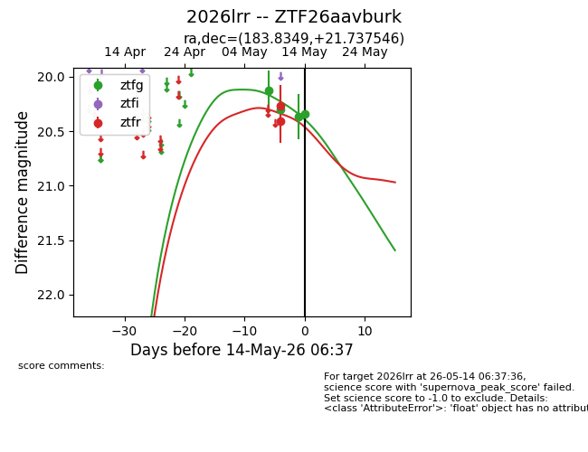
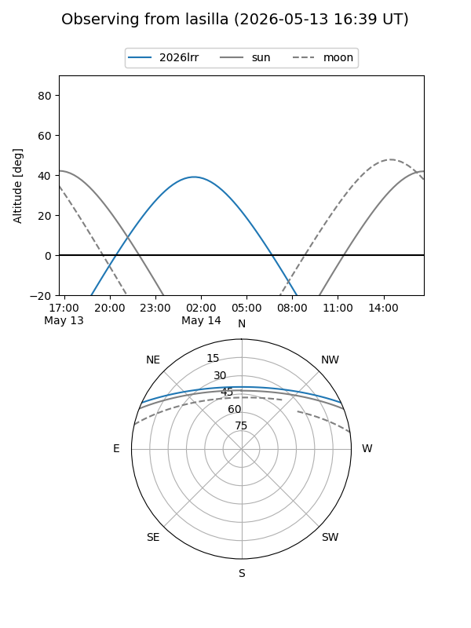
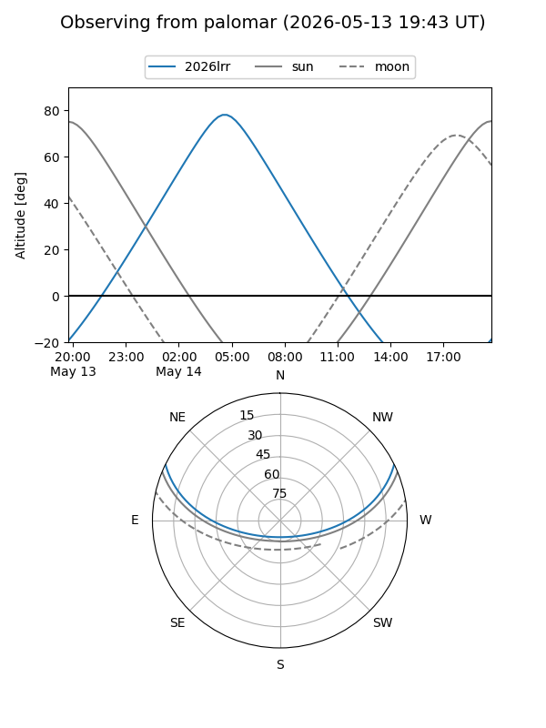
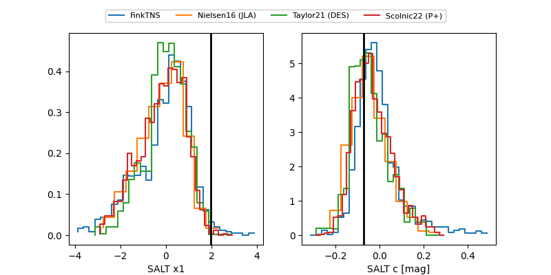

2026lrr
Target 2026lrr at 2026-05-14 06:38
Aliases and brokers:
FINK: link
Lasair: link
ALeRCE: link
TNS: link
YSE: link
alt names
ZTF26aavburk (ztf,fink_ztf)
2026lrr (tns,yse)
Coordinates:
equatorial (ra, dec) = 183.8349,+21.73755
equatorial (HMS+DMS) = 12:15:20.37,+21:44:15.17
galactic (l, b) = (244.2646,+80.17835)
Flags:
Photometry:
last ztfg=20.35, ztfr=20.41
4 ztfg, 2 ztfr detections
Lightcurve

Visibility


Additional plots
